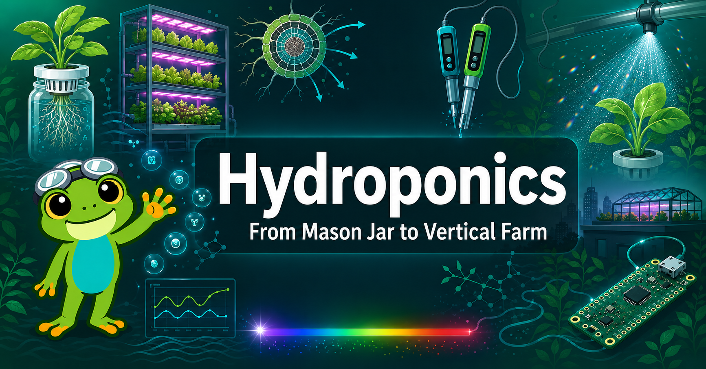

Welcome¶

Welcome, Hydro-Explorer!
 Let's grow something amazing! Whether you're starting with a $10 mason jar on a windowsill
or dreaming about a rooftop vertical farm, this book takes you from the first root hair
all the way to a business plan. Root for it!
Let's grow something amazing! Whether you're starting with a $10 mason jar on a windowsill
or dreaming about a rooftop vertical farm, this book takes you from the first root hair
all the way to a business plan. Root for it!
About This Book¶
Hydroponics: From Mason Jar to Vertical Farm is an interactive intelligent textbook for advanced high-school and college students. It bridges the gap between the plant physiology and nutrient chemistry that make hydroponics work and the hands-on builds, automation, and economics that make it scale.
The global vertical farming market exceeded $20 billion in 2026 — and the same science that powers a rooftop commercial farm can be explored for as little as $10 with a mason jar, a net pot, and some mineral salts. Every concept in this book is reinforced by MicroSims — interactive browser-based simulations you can run without installing anything.
Who This Book Is For¶
- High-school and college students in biology, chemistry, or environmental science
- STEM hobbyists building their first DIY hydroponic system
- Makers and engineers adding automation (Raspberry Pi Pico, ESP32, MicroPython)
- Entrepreneurs exploring urban agriculture and vertical farming business models
Prerequisites: Basic biology (photosynthesis, cells), basic chemistry (pH, ions, concentration), and comfort reading graphs. No prior hydroponics, electronics, or programming experience required.
What You Will Learn¶
| Theme | Topics |
|---|---|
| Plant Science | Root anatomy, nutrient uptake, water transport, photosynthesis |
| Nutrient Chemistry | pH, EC, macro- and micronutrients, Mulder's chart, solution mixing |
| System Design | Kratky, DWC, NFT, Ebb-and-Flow, Aeroponics — trade-offs and builds |
| Automation & IoT | Sensors, MicroPython, data logging, wireless dashboards |
| Lighting & Environment | PAR, PPFD, DLI, LED spectra, VPD, CO₂ |
| Food Safety | HACCP, biofilm, pathogens, sanitation protocols |
| Scale & Economics | Vertical farming, ROI modeling, sustainability, business planning |
How to Use This Book¶
Use the left sidebar to navigate chapters, the learning graph, MicroSims, and reference content.
- Chapters — 21 chapters from introduction through financial modeling, each with explanations, diagrams, and embedded MicroSims
- MicroSims — 30+ interactive simulations covering nutrient mixing, system comparison, sensor dashboards, and more
- Learning Graph — visualize how all 500 concepts connect and depend on each other; explore before you read
- Course Description — the full scope, prerequisites, and Bloom's Taxonomy learning outcomes
Getting Started¶
New to hydroponics? Start here:
- Chapter 1: Introduction — history, why soilless growing works, and a field overview
- Chapter 2: Root Biology — the plant science that everything else builds on
- Chapter 6: Basic Hydroponic Systems — your first system choice
Ready to build? Jump to Chapter 8: DIY & School Projects for a \(10–\)50 starter build.
Want to automate? See Chapter 12: MicroPython Fundamentals.
Thinking commercial? Chapter 20: Vertical Farming and Chapter 21: Financial Modeling lay out the economics.